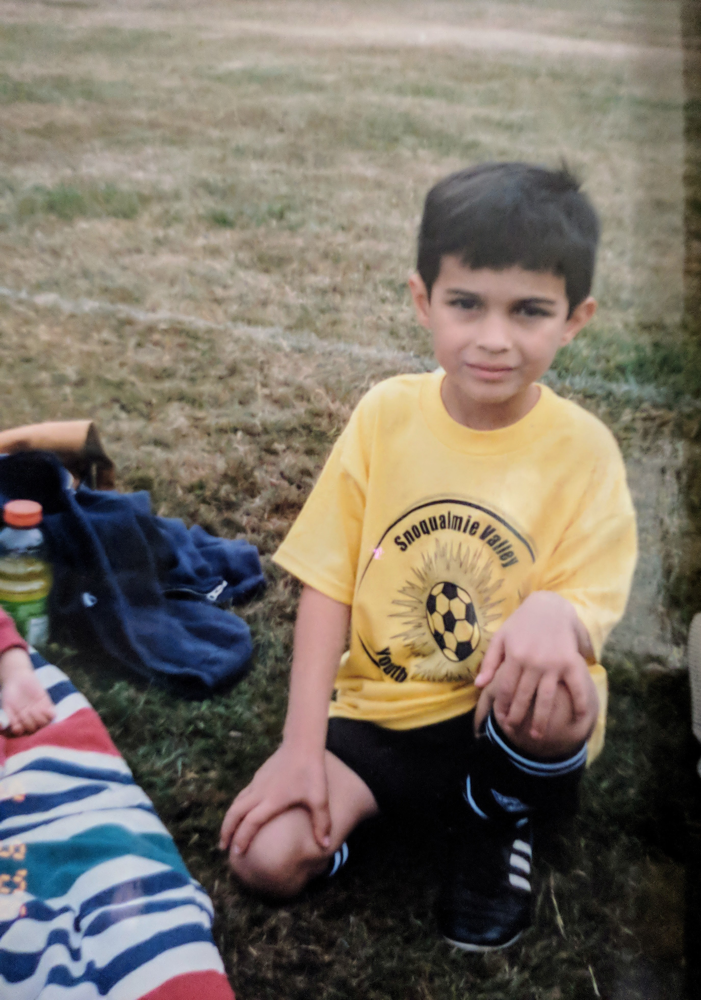
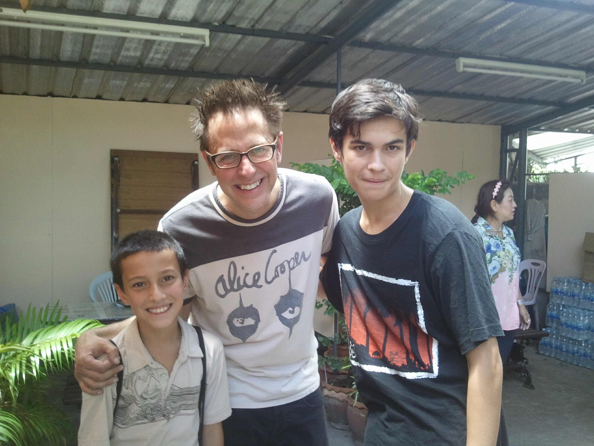

I was born in Mesa, Arizona. I moved after a few months to a few cities in Washington state (such as Bellevue and Snoqualmie). I lived in that state for about 9-10 years until I moved to Provo, Utah, where I lived for about 6 months. After that, I moved to Alpine, Utah, where I live to this day. In the time since, I served a 2 year church mission in Northern California (the California Santa Rosa mission). I have also lived some of that time back in Provo for school.
Some of my hobbies and interests include soccer, travel, snowboarding, surfing, and Marvel. I played competitive club soccer growing up, and I follow a lot of the professional teams. My favorite teams are the Seattle Sounders and the United States Men's National Team. I also follow Major League Soccer as a whole. I have gone snowboarding with my friends a lot growing up. The main resorts I go to are Park City and Brighton. I have always loved Marvel, so if you have any Marvel related questions, let me know.
My mom works for the airlines, so I have been lucky enough to have traveled to over 20 countries (some of them multiple times) and to many of the states in the US. I have had many cool experiences from this, such as the time I met James Gunn (the director of the Guardians of the Galaxy movies) in Bangkok, Thailand.
Another thing I really enjoy is music. I have been to a few concerts. Some of my favorite genres include rap, R&B, folk, alternative, reggae, and a handful of others.